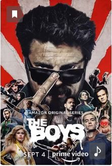
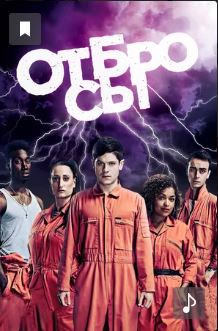
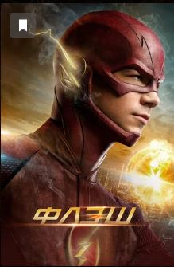
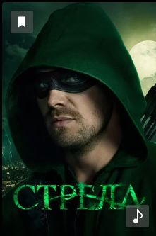
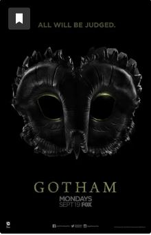

Представляем вашему вниманию подборку сериалов про супергероев.
Топ 5 лучших:

Режиссёр: Стефан Шварц, Филип Сгриккиа, Фред Туа
В ролях: Карл Урбан, Джек Куэйд, Энтони Старр, Эрин Мориарти, Джесси Ашер, Лас Алонсо, Чейс Кроуфорд, Томер Капон, Карен Фукухара
Действие сериала разворачивается в мире, где существуют супергерои. Именно они являются настоящими звездами. Их все знают и обожают. Но за идеальным фасадом скрывается гораздо более мрачный мир наркотиков и секса, а большинство героев — в жизни не самые приятные люди. Противостоит им отряд, неофициально известный как «Пацаны».

Режиссёр: Том Грин, Джонатан ван Тюллекен, Том Харпер
В ролях: Нэйтан Стюарт-Джарретт, Иван Реон, Лорен Соча, Антония Томас, Джозеф Гилган, Роберт Шиэн
Келли, Нейтан, Кертис, Алиша и Саймон выполняют общественные работы за совершение мелких преступлений. Они – не друзья. Более того, у них нет ничего общего. В группе постоянно происходят конфликты, споры и драки. Но в удивительный день во время сильного шторма сильная молния делает из них супергероев и наделяет их сверхспособностями. Они понятия не имеют, что делать с открывшимися перспективами. Более того, никто из них не рад своей новой силе, потому что она раскрывает их самые глубокие комплексы и тайны, которые бы они не хотели выставлять напоказ.

Режиссёр:Дермотт Даунс, Стефан Плещински, Дэвид МакУиртер
В ролях: Грант Гастин, Кэндис Паттон, Даниэль Панабэйкер, Карлос Валдес, Томас Кавана, Джесси Л. Мартин, Даниэль Николет
Когда Барри Аллен был маленьким, больше всего на свете ему хотелось быть супергероем – тем, кто превосходит лимиты человеческого организма и использует во благо данную ему силу. Когда Барри было одиннадцать лет, он на собственном опыте узнал, что люди с необычными способностями действительно существуют: его мать была убита одним из таких людей. Повзрослев и став судмедэкспертом, Барри не отбросил мыслей о сверхлюдях и продолжал искать доказательства их существования, что не лучшим образом сказывалось на его репутации и общении с коллегами. Впрочем, однажды его усилия были вознаграждены...

Режиссёр:Джеймс Бэмфорд, Джон Беринг, Глен Винтер
В ролях: Дэвид Рэмси, Стивен Амелл, Эмили Бетт Рикардс, Кэти Кэссиди, Пол Блекторн, Уилла Холланд, Колтон Хэйнс
После кораблекрушения плейбой миллиардер Оливер Куин пропадает и считается погибшим в течение пяти лет, после чего его обнаруживают живым на затерянном острове в Тихом океане. Когда он возвращается домой в Старлинг-Сити, его преданная мать Мойра, столь любимая сестра Теа и лучший друг Томми приветствуют его дома, но они видят, что Оливер изменился после испытаний на острове. Хотя Оливер скрывает правду о человеке, которым он стал…

Режиссёр: Роб Бэйли, Дэнни Кэннон
В ролях:Бен Маккензи, Донал Лог, Давид Мазуз, Робин Лорд Тейлор, Камрен Бикондова, Кори Майкл Смит, Шон Пертуи, Эрин Ричардс, Морена Баккарин
Детектив Джеймс Гордон приступает к работе в департаменте полиции Готэма. Город потрясает убийство Томаса и Марты Уэйн, влиятельных предпринимателей и филантропов, и Гордон берётся расследовать это дело. Между тем ему приходится сталкиваться с мафией и опасными злодеями, населяющими Готэм.